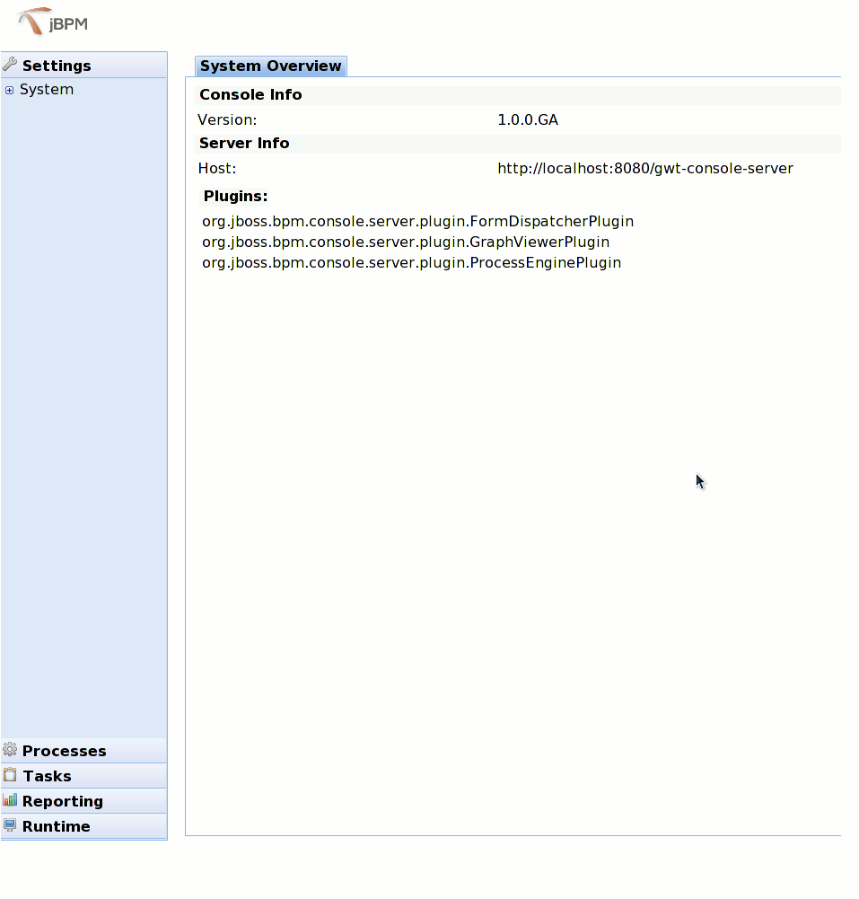

Getting Started with jBPM 4.0 (Part III)
In this entry, we are going to deploy the built process definition into jBPM server. Basically, we need to deploy two artifacts, one is the process definition file, which is archived as .bar file, the other is the classes file that will be needed.
Deploy the process definition into jBPM server
jBPM offer its ant jBPM deploy task out of box, the example also uses this way to deploy the process definiton, the other way to do it is to move this .bar file to the jboss deploy folder directly, it will be pick up and deployed into db as well, thanks to the jBPM deployer that leverage JBoss AS 5 deployer framework.
In order to use both these ways, we will add the build.xml to help us do the bar, jar build work.
below is the code snippet from the build.xml.
we will look into both two deployment ways, one is using ant task, the other is using jBPM deployer, the underlie is the same, it is using the RepositoryService to do the deployment work.
using jBPM deployer.
Use the jBPM deployer ANT task.
Note: The jBPM server needs to be up and running, and then you deploy the process archive into server through either way.
jBPM console tour
After we deployed our process, we will use the console to see the process information etc.
Let's login http://localhost:8080/jbpm-console, with the 'alex/password' combination, it will direct us to the console homepage, as following page.

Click the 'Runtime' tab from the left menu panel, we can see the 'Deployments' and 'Jobs' links. Click the 'Deployments', we can see the helloworld.bar that we just deployed.
@80
Click the 'Processes' tab from the left menu panel, we can see the 'Definition List' link, click it, it will show us all of the process definitions as following.
Click the 'Process Instances' tab from the right area, click the 'start' button, which will start the process definition, its instace detail looks like:
Also, look on the server's console, you would notice that following lines:
So, it means, the started process instance already gone through the java node, and right now is on the 'review' activity node. Remembered that we assigned this task to 'alex' in the process definition, and we login the console by using alex, so we should be able to see this task in the task tab from left panel.
Click the 'Tasks' -> 'Task Lists' -> 'Personal Tasks', you would see the page as following.
You can view or release this task. Currently, if you click the 'view' button, it will tell you that 'The task doesn't provide a UI'. we haven't added the UI page for this task yet, which we will talk about it in the next entry.
Because this entry is a bit lengthy, I think it is better that I make a summary here. Basically we talked about two ways to deploy the process and its classes into jBPM server, once you've deployed it, you should be able to see as much as information from the jbpm console, which is very fancy, built based on GWT.
In the next entry, I will try to talk about the task form in the console, stay tuned.